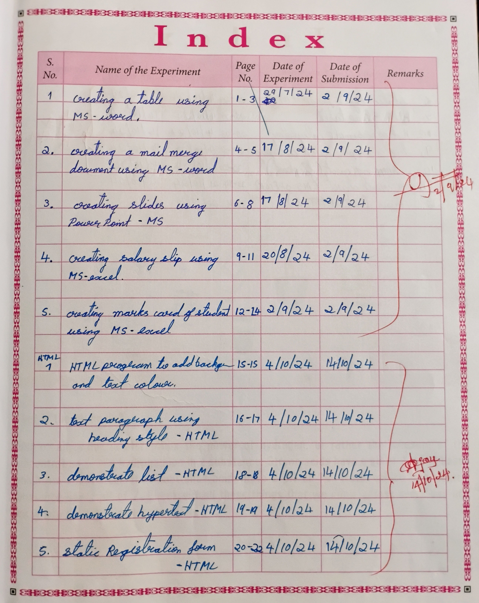
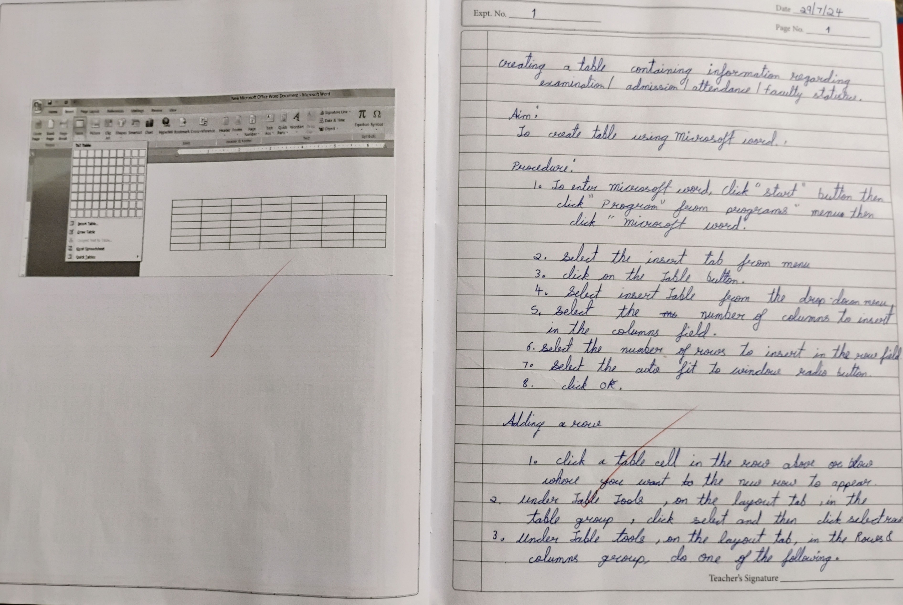
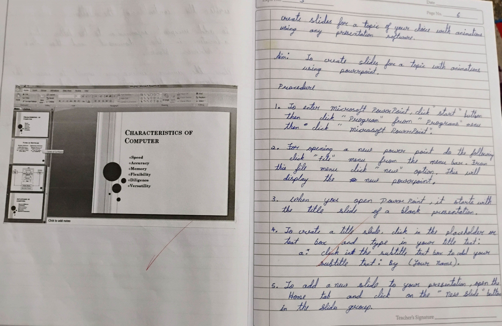

write the indivigual program name with the serial number, program name, Date of compilation and Date of Submission.
Write the code on the right side of the record(rule page), you can take the screen shot of your program's output or sketch neatly, as shown in the image.
As in the digital record, Write the program(code) on the right side of the record(rule page), and write you output in the left side(unrule page) of the record, as shown in the image.
Make sure your record is fully completed always, your record must should not contain any mistakes, make sure you run the code correctly and then write the program and output in the record. the record must be written in good and neat hand writing.
............